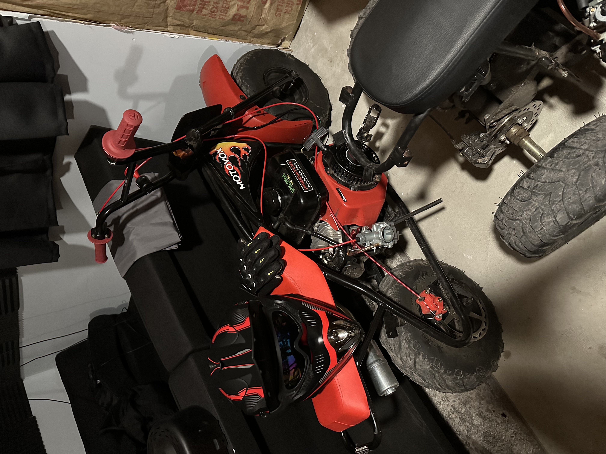
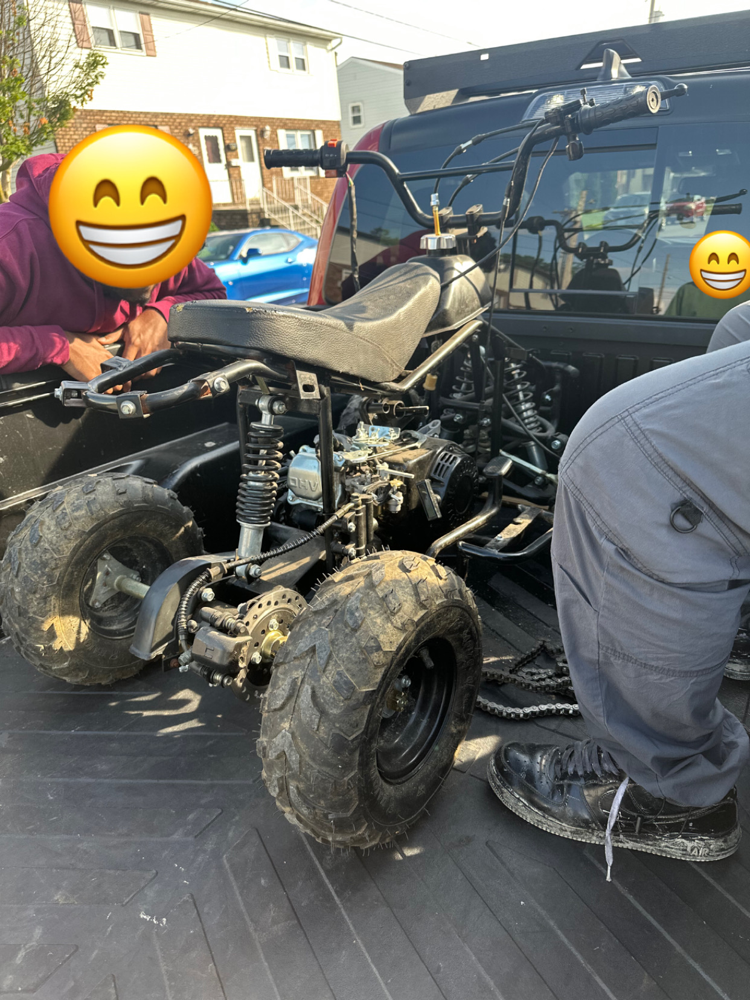
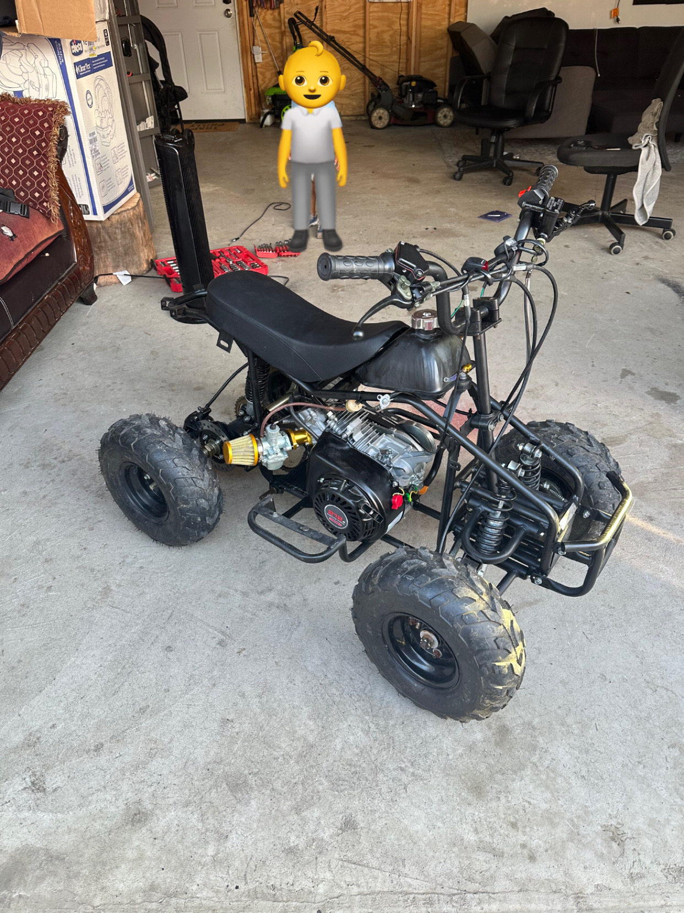
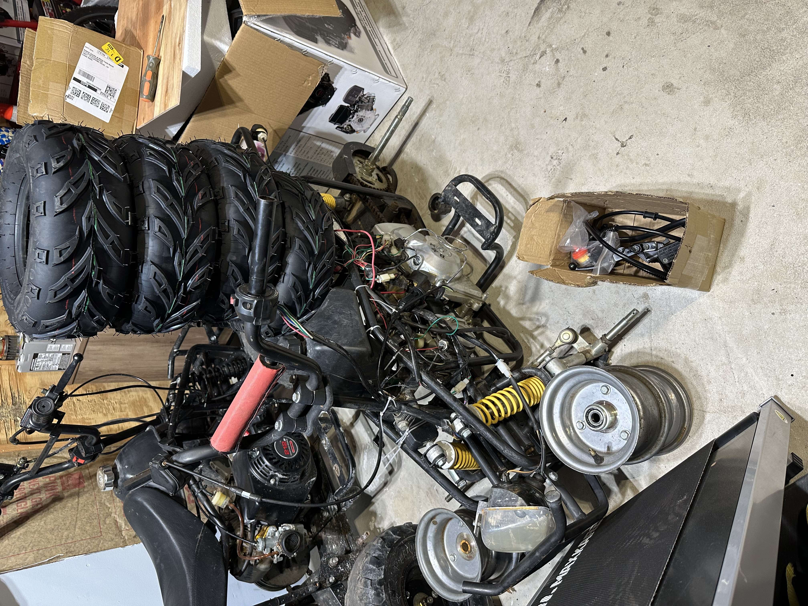

My Builds
MotoVox MBX10 (Custom)
Last summer I was extremely bored so I decided to build this from scratch. It was a little project of mine that took a couple of days to finish.
Parts:
- Predator 224cc
- Tires
- Centrifugal Clutch
- Sprocket
- #35 Chain
- Chain Guard
- Center Rear Exhaust
- Carburetor
- Brake Lever
- Red Grips and Throttle
- Seat
- Kill Switch
This was such a fun first build. It took a while to create it as I was buying and returning parts. With trial and error I finally figured it out. I ended up selling it and made extraordinary profit.
Coleman CT200u (Custom)

After I built the Motovox, my friend wanted to build another bike with him.
Parts:
- Predator 212cc
- Tires
- Centrifugal Clutch
- Sprocket
- #40 Chain
- Chain Guard
- Exhaust
- Carburetor
- Brake Lever
- Black Grips and Throttle
- Metal Fender
- Headlight
This was pretty straight forward. I am trying to convince my friend at get it DMV approved by adding a title to it. All he would have to is add turn signal lights and get PENNDOT approved tires.
Tao Tao Quad (Custom)
 Those two bikes were completed in less than two weeks. It was a fun hobby so I was always scouting Facebook Marketplace and came upon this quad. I was willing to tackle on something a little different and having a quad would be sick.
Parts:
- Predator 212cc
- Torque Converter
- Exhaust
- Carburetor
- Drum Brakes
- Hydraulic Brakes
The hardest part was adding the torque converter because I tried to straight chain it with a ordinary centrifugal clutch. ATV's won't allow that due to the four tires need more torque.
Tao Tao Quad (Current Build)
Facebook marketplace always has steals. This guy sold me this quad for only $100 because he didn't know to put on the tires on the rims.
Parts:
- Battery
- Hydraulic Brake
I am still working on this but I have a buyer that is paying me $500 to finish it.
Mid Sized ATV (Current Build)

This is going to be such an interesting build. It might look small but this frame is huge. I am in the process of learning how to weld and am considering take apart the entire frame to perfect the build.
Parts needed:
- Engine?????? Might get a 420cc or 301cc Predator engine
- Mounting Bracket
- #530 Motorcycle Chain
- Carburetor
- Torque Converter
- Hydraulic Brakes
This is a very experimental build and I look forward to adding a title to it. Driving on the road legally would be very fun and I could drive to work in swag. 😎